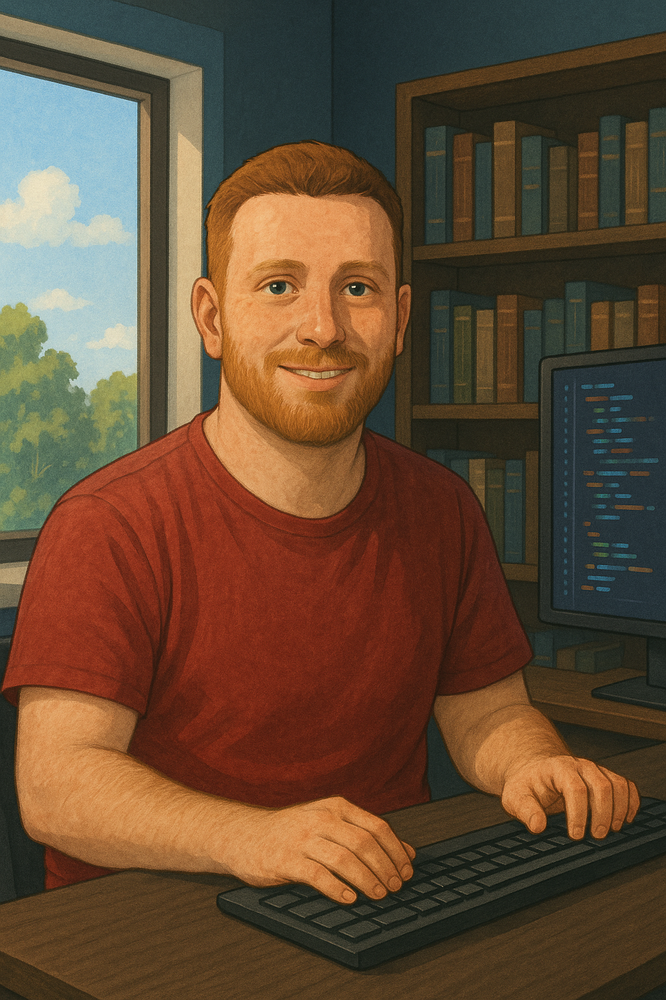

Training
What I hope to gain from a traineeship at wir-machen-druck.de is the right environment to grow further on this journey.
For me, two things are especially important:
First, a motivated and friendly team that supports me, encourages my learning, and is open to questions. And second, professional guidance, a workplace where I can expand my skills, work with modern technologies, and develop into a capable developer.
What I'm looking forward to:
- group A supportive team with a positive and motivating atmosphere
- psychology Clear feedback and guidance throughout the learning process
- construction Hands-on experience with real-world projects
- rocket_launch Learning modern technologies and development tools
- trophy A space to grow into a capable and confident developer